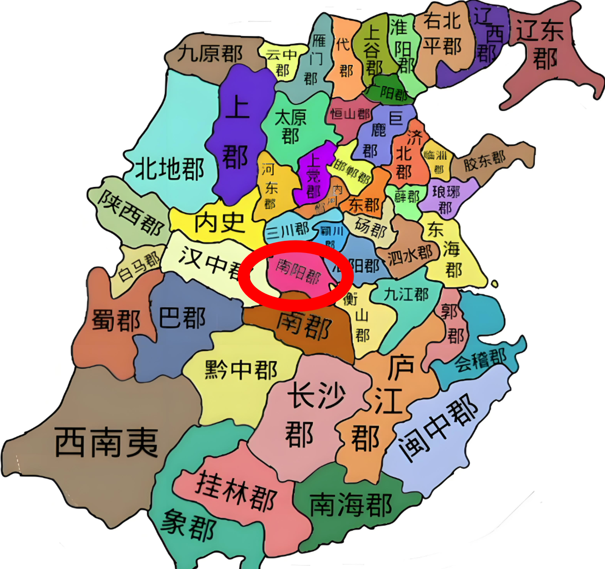
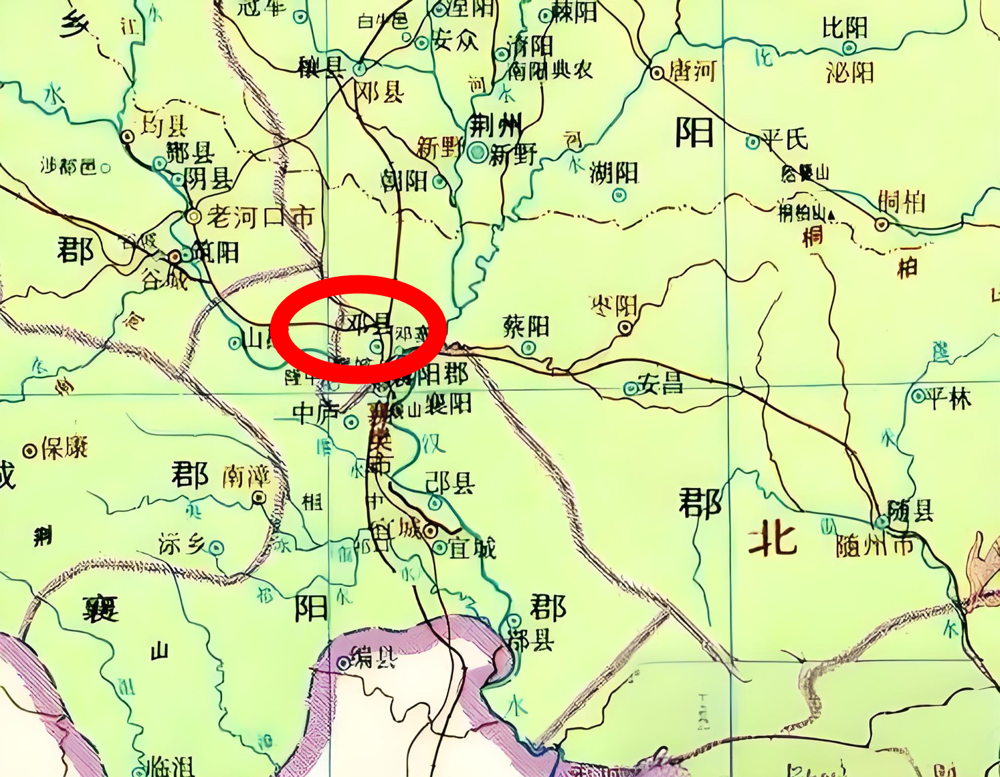
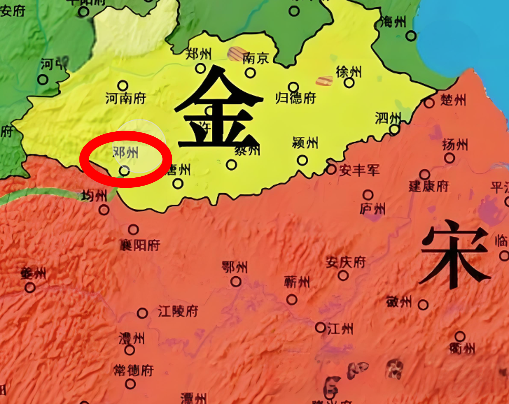

🎵←点击播放音乐
春秋早期，邓州是邓国 的首都。
公元前678年，邓国被楚国所灭；公元前272年，秦国设下南阳郡，邓州隶属于它。

公元197年，曹操在邓州进行了宛城之战，并在公元208年开挖运河作为赤壁之战的后勤支援。

在南宋时期，邓州曾被割让给金国，不久后又归于南宋。

邓州在时间长河中的变迁切实地展现出其在政治、经济与文化等诸多领域的发展态势。同时，也呈现出城市区域的重塑历程。所有这些事件和转变共同铸就了邓州辉煌的历史与文化。
返回